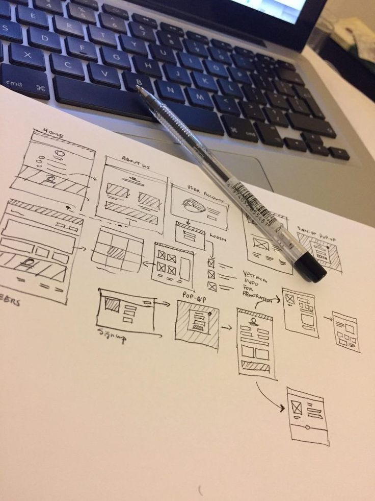

Principais conceitos da UI e UX reunidos
Parte em que o usuário interage com um sistema ou layout do produto. A UI integra a escolha de cores e contrastes, a tipografia, botões e ícones e a organização da interface.
Área que estuda a experiência do usuário, ou seja, como as pessoas se sentem ao interagirem com um sistema ou serviço online. O objetivo da UX é tornar o uso de interfaces mais simples e intuitivas, agradando ao usuário sem causar confusão. Os principais pilares do UX são: usabilidade, acessibilidade e utilidade.
